Introduction
The Moving Platform Maker 2D Asset is the solution to easily create 2D moving platforms.
Here is what you can do:
- Ping Pong

- Loop

- Go from a path onto another
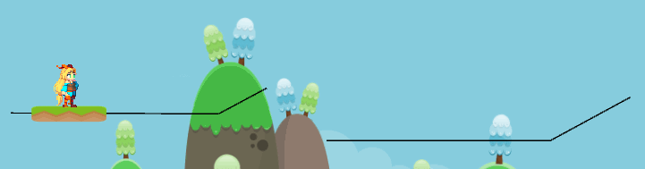
- Multiple path followers on a path
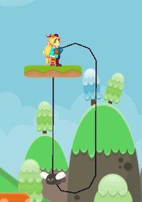
- Connected paths

- Falling Platforms

- Enemies

- Blades
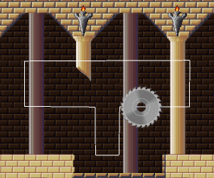
- Circular platforms
- Trigger activated on the first touch

- Trigger activated from a distance

- Trigger activated only when the player is inside the trigger area

- Trigger activated only when the player is inside the trigger area, and changes direction each time

Convinced?

Let's talk about how it works.
Path
Creating a path from the GameObject menu:

A path consists of:
a) Edit button
The edit button enables the path editor, where you can add, remove and move points of the path.
- Editing and moving points:
- Adding new points at the end:
Hold Shift and click in the position that you want the new point.
(This option is not available when the path is Cyclic.)
- Adding new points in the middle:
Hold Shift and click in the circles that appear between the existent points.

- Removing points:
Hold Ctrl and click on the points that you want to remove.
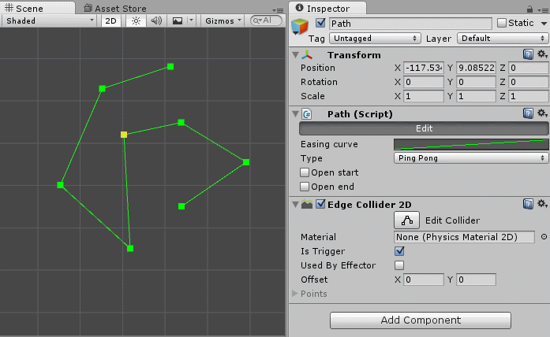
b) Easing curve
The easing curve of the path can be adjusted for the movement of the path follower. The default curve is a straight line and it's the best option when using with an open path or connected:
You can use a sigmoid curve to make the movement smoother:


c) Type
There are three types of Paths:
1 - Cyclic:
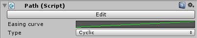
2 - Ping Pong:
2.1 - Ping-Pong - Open start:
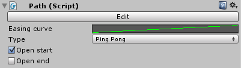

2.2 - Ping-Pong - Open end:


3 - Connected:
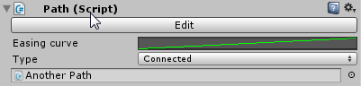
Path follower
The path follower is a game object that can follow a path. It can be a platform, an enemy, etc.
How to create a path follower?

A path follower consists of:
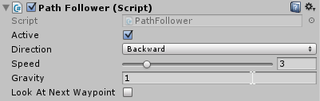
a) Active
It defines whether this object is active in following the path or not. If not it'll stand still.
b) Direction
It defines the direction that it'll follow the path. Forward: from start to end. Backward: from end to start. In a ping pong path the direction changes when the follower reaches the boundaries.
c) Speed
It defines the speed of the follower.
d) Gravity
The gravity acceleration of the follower when out of the path. It has it's own acceleration independent of the unity physics system.
e) Look At Next Waypoint
Useful for enemies, when following a path it turns it's front in the direction of the next waypoint of the path, relativelly to the X axis. Example:
PathFollowerTrigger
It is used to activate a path follower when the player or something enters in the trigger area.
How to create a trigger ?
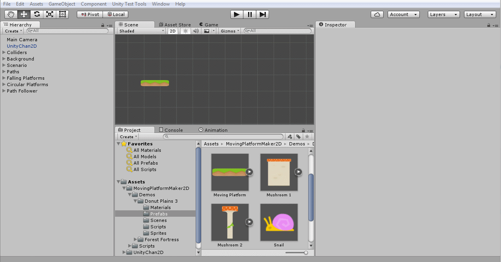
A BoxCollider2D will be added to the game object. You can change to any other collider 2D you want, it just need to be a trigger.
A path follower trigger consists of:
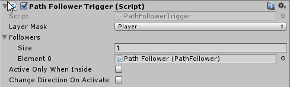
a) Layer Mask
The layer mask defines which layers can interact with the trigger.
b) Followers
A list of path followers that will activate when the trigger is fired.
c) Active Only When Inside
If checked, the followers will only be active when the player is inside the trigger area. If unchecked, the followers will be activated when the player enters the first time into the trigger area.
d) Change Direction On Activate
Each time the trigger is activated it will change the follower's direction.
CircularPlatformController
How to create a circular platform controller?
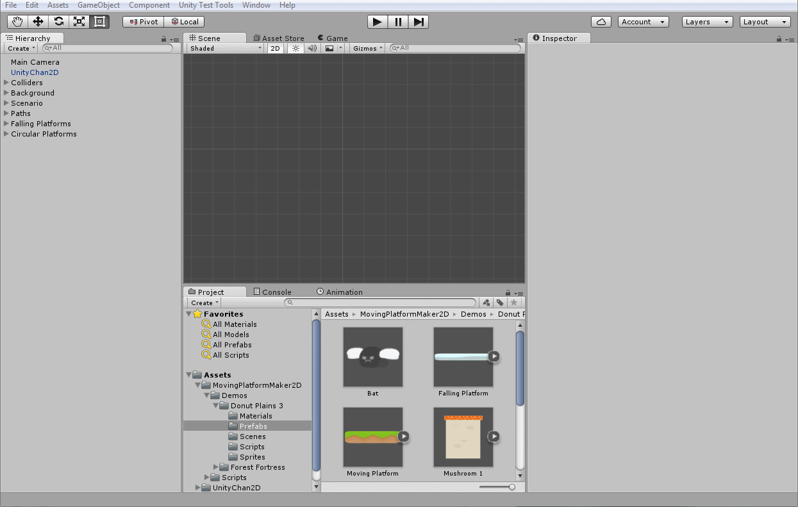
A circular platform controller consists of:
a) Gizmo Color
The color of the circle gizmo.
b) Degrees per second
The angular velocity of the platforms in degrees per second.
c) Radius
The radius of the circle.
d) Number Of Platforms
The number of platforms that will be instantiated.
e) Platform Prefab
The platform prefab that will be instantiated.
You can use it for enemies also.
Moving platform
This script is used in the platform prefab and is responsible for carrying the player.
Falling platform
This script is used in the platform to set a delay to fall after being touched by the player.

Decorators
There are 2 decorators that can help to better visualize the paths. Just add the script to the path game object.
- PathGizmosDecorator
It shows the path in the scene view in the editor.
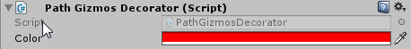
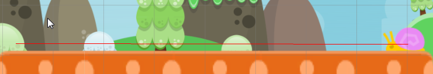
- PathLineDecorator
It creates line renderers to show the path in the scene view and also in the game view.

Credits
Demo Scenes
The demo scenes were inspired by Super Mario World's levels. All the images and music are open sourced.
Donut plains 3
Music:
http://opengameart.org/content/jump-and-run-8-bit
Sprites:
http://opengameart.org/content/platformer-art-mushroom-land
http://opengameart.org/content/platformer-art-deluxe
http://opengameart.org/content/2d-backgrounds-set
Forest Fortress
Music:
http://opengameart.org/content/the-forgotten-forest
Sprites:
http://opengameart.org/content/pixel-art-castle-tileset
https://commons.wikimedia.org/wiki/File:Circularsawblade.png
http://opengameart.org/content/16x16-and-animated-lava-tile-45-frames
https://openclipart.org/detail/22293/cartoon-rhino
{kind=link}
Tiles:
https://www.assetstore.unity3d.com/en/#!/content/20203
Unity Chan 2D
The demo scenes were created using the Unity-Chan 2D which is not included in the asset. Unity-Chan is a copyright © Unity Technologies Japan/UCL. The Unity-Chan package can be downloaded here. Please read the licence terms before using it for any purpose.
In order to make it easier to achieve the same results, here are the configurations for each scene. Just add Unity-Chan 2D prefab to the scene and configure as follows:
Donut Plains 3

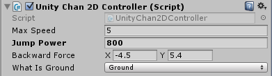
Forest Fortress